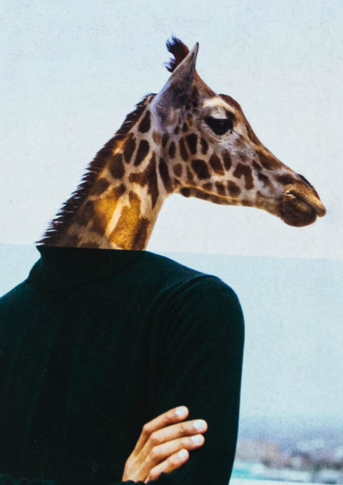
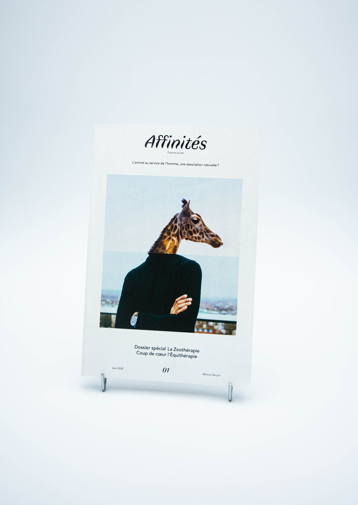
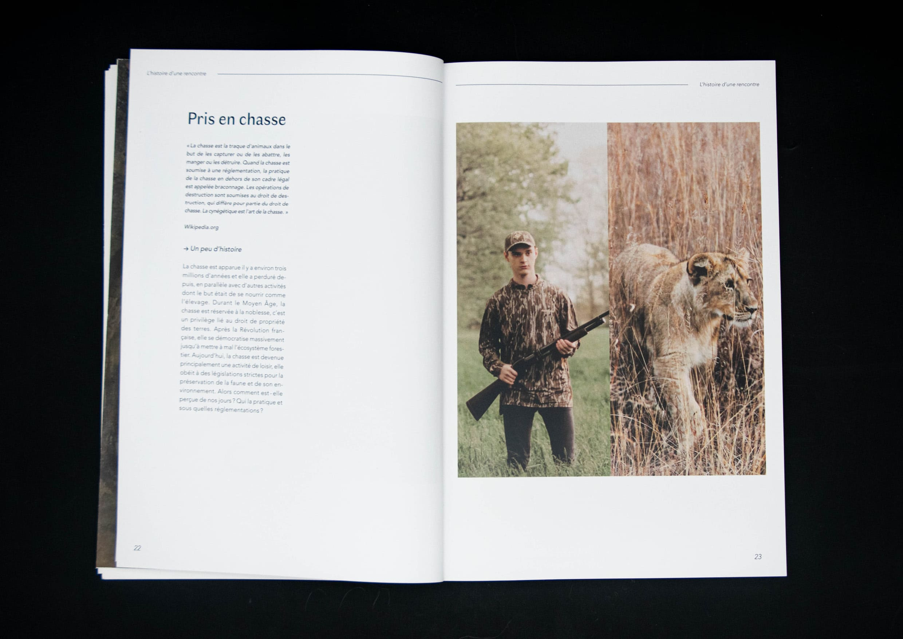
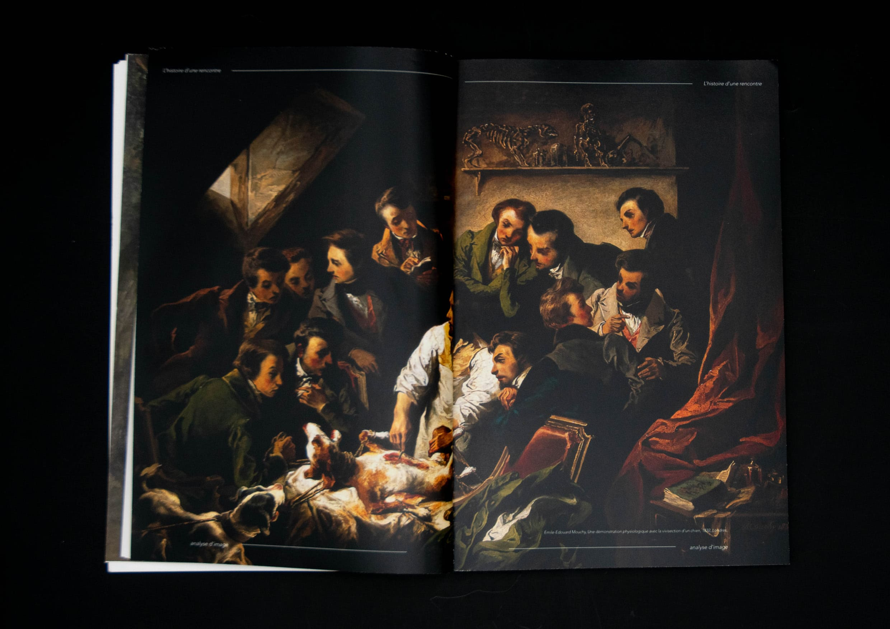
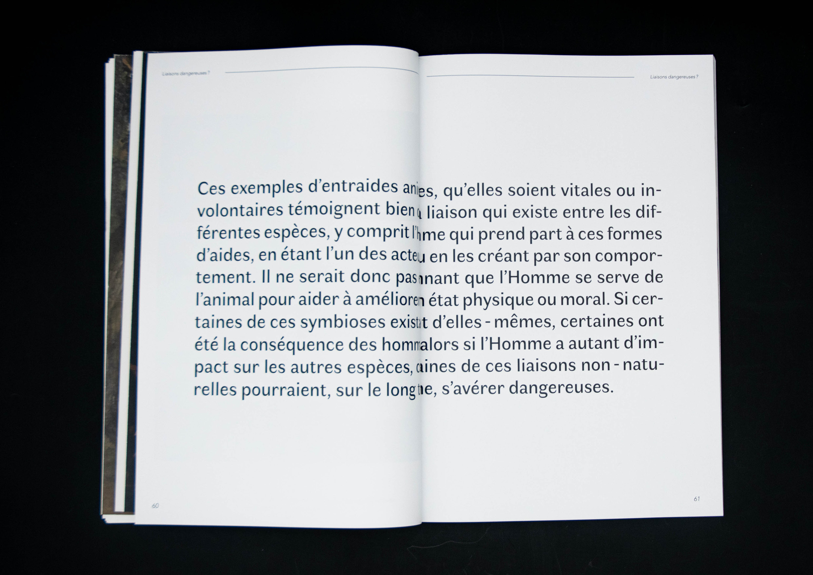
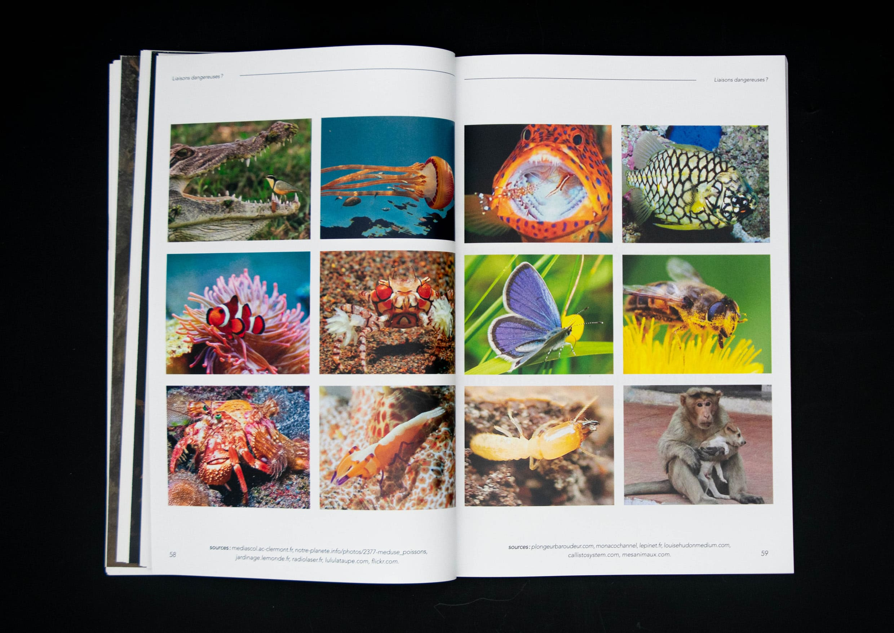
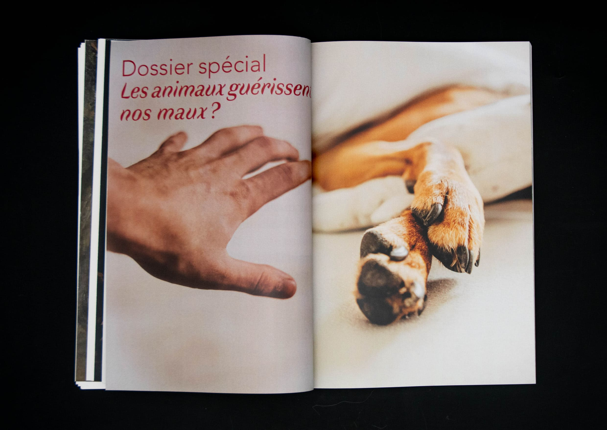
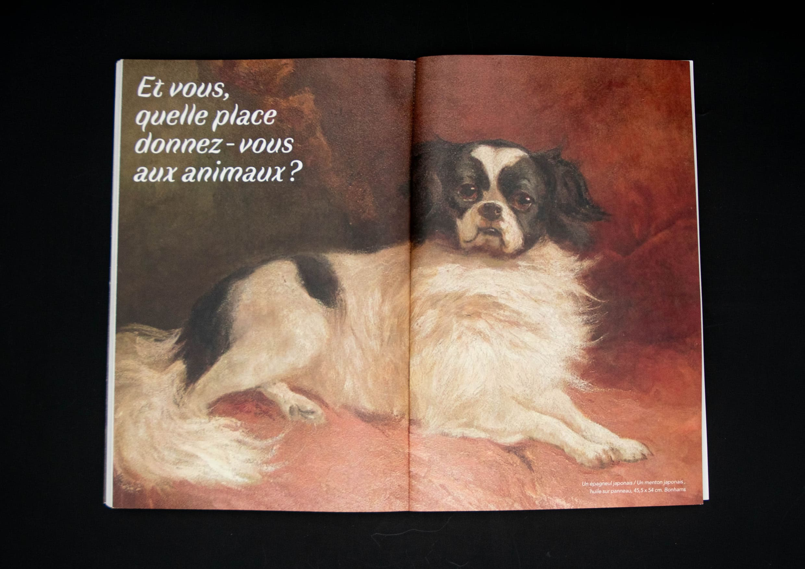
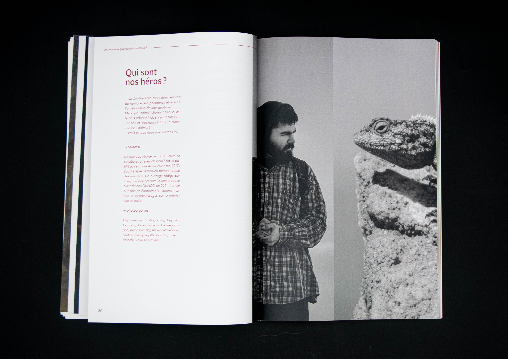

« The animal at the disposal of Man, a natural association ? ». This is the central question of this review, which links humans and animals through a practice: Zootherapy. Discover this practice aimed at improving the physical and moral health of patients in need. Affinités is also a reflection on our relationship with animals, on how we live with them and above all, how we work with them. Find a series of articles and interviews and make your own opinion, do we serve animals or do we collaborate with them ?
Creation of a review on a theme of our choice for the validation of the Master, followed by Nathalie Bossard.









